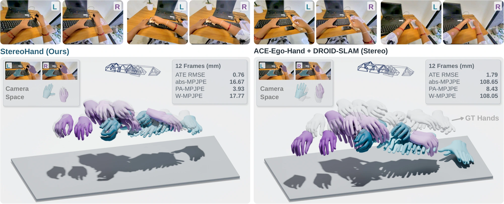
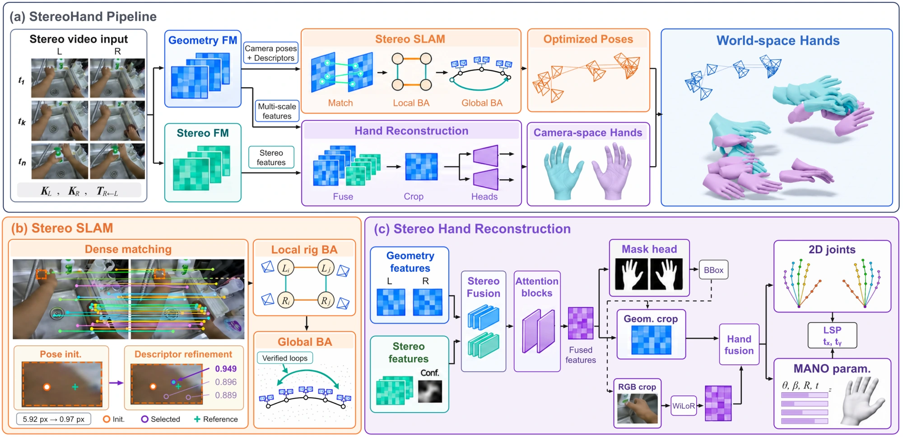
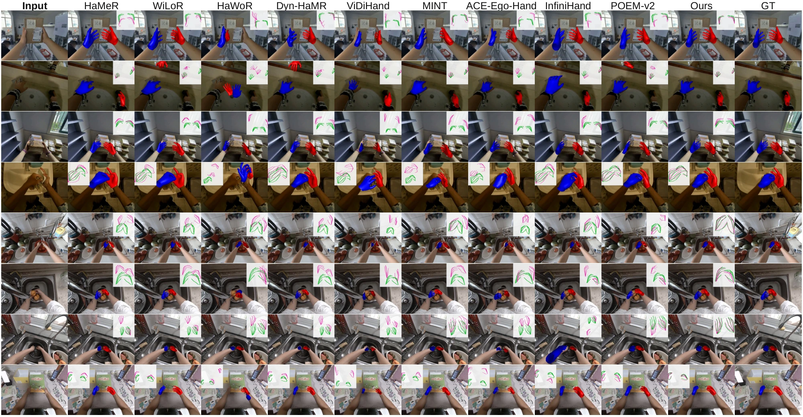
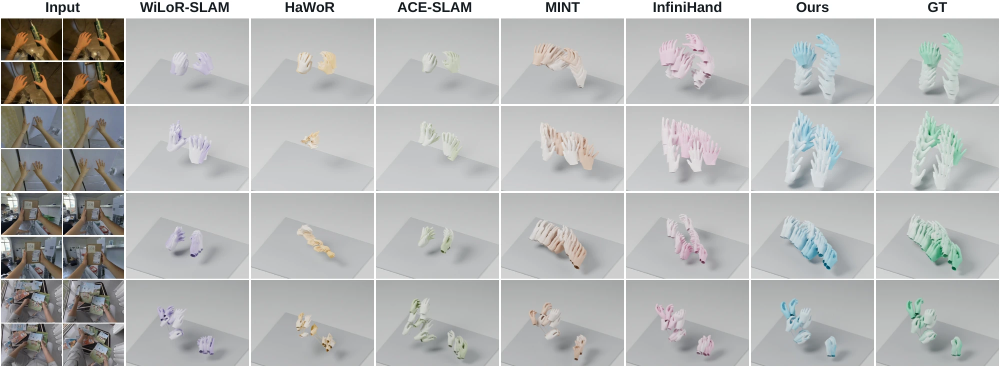

Locate the hands in metric 3D.
Cross-view alignment and reliability gating combine geometric and stereo features for hand localization and MANO reconstruction.
STEREO VISION · METRIC HAND MOTION
Recover where the hands move —
in the physical world.

EXPLORE THE RECONSTRUCTION
Choose a scene to compare six methods. For each method, we visualize the reconstructed hands as 2D overlays on the left-camera image and as 3D meshes in world coordinates.
| Method | 2D (px) | Camera 3D (mm) | World 3D (mm) |
|---|
THE IDEA
Recovering metric world-space hand motion from egocentric video provides essential geometric demonstrations for embodied learning. Monocular approaches achieve plausible 2D alignment but incur centimeter-scale errors in absolute 3D position, whereas calibrated stereo remains vulnerable to camera tracking drift that corrupts world-space trajectories. To overcome both limitations, we present StereoHand, a unified framework that jointly resolves metric hand localization and stereo camera tracking through a shared geometric foundation model. Specifically, we fuse geometric and stereo foundation features through cross-view alignment and reliability gating to regress MANO parameters in metric camera coordinates. Simultaneously, dense matching descriptors from the same geometric backbone drive a stereo SLAM backend, constraining local rig bundle adjustment and a global keyframe graph with cross-view and temporal correspondences. Across in-domain and out-of-domain benchmarks, StereoHand reduces Abs-MPJPE from 161.05 mm for ACE-Ego-Hand to 16.24 mm on GenHumanEgo and lowers ATE RMSE by 90.3% relative to stereo DROID-SLAM on EgoSuite. Ultimately, by coupling feed-forward geometric priors with explicit stereo constraints, StereoHand delivers accurate, globally consistent hand trajectories for embodied learning.
A UNIFIED STEREO FRAMEWORK
Stereo evidence supports hand reconstruction and camera tracking within a shared geometric backbone.

Cross-view alignment and reliability gating combine geometric and stereo features for hand localization and MANO reconstruction.
Dense temporal and cross-view correspondences constrain local rig bundle adjustment and a global keyframe graph.
CAMERA SPACE → WORLD SPACE
Evaluation on 100 EgoSuite scenes and 50 GenHumanEgo scenes.
| Method | Abs-MPJPE (mm) ↓ | MPJPE (mm) ↓ | PA-MPJPE (mm) ↓ |
|---|
Compared with 11.08 cm for stereo DROID-SLAM under SE(3) alignment without scale fitting.

